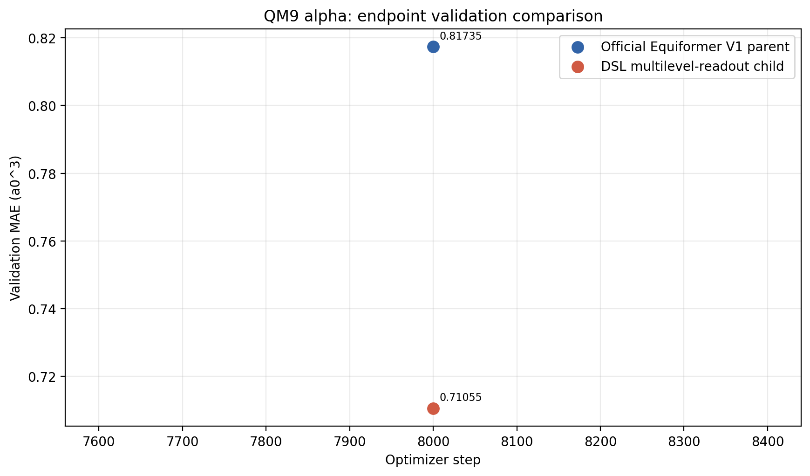
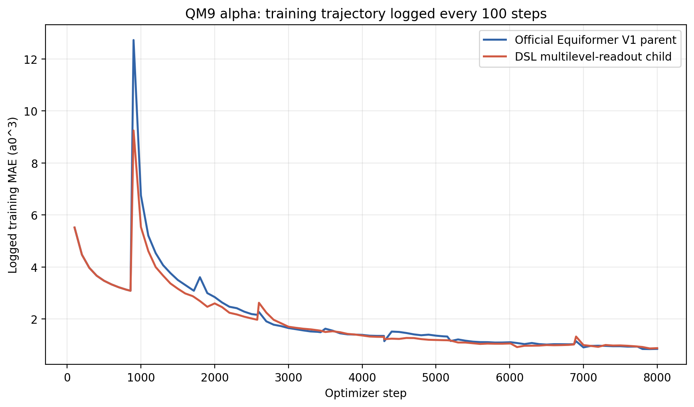
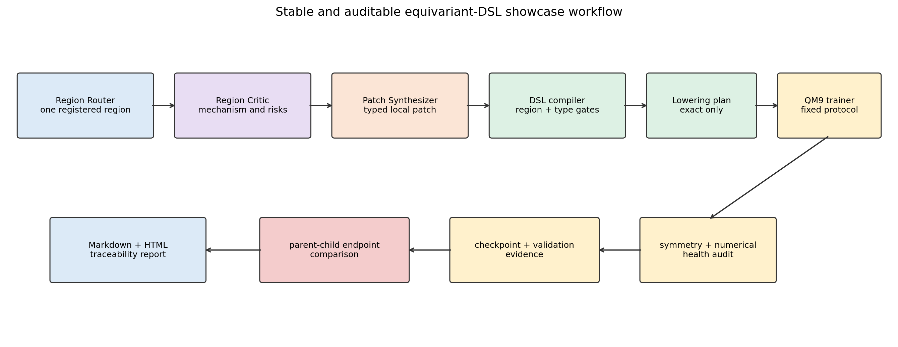

本报告由实验原始JSON、训练指标和checkpoint自动生成。实验只使用validation比较候选，未访问test集。
本次实验完成了真实Equiformer V1父代与一个LLM生成DSL子代的同协议端到端训练。父代通过exact_reference调用官方Equiformer V1构造语义；子代通过exact_hybrid保留官方V1主体，仅在认证的v1_readout区域增加从block2读取的辅助不变量标量头，并用可训练组合器与原始末端readout融合。
在固定seed=201、batch size=32、8000 optimizer steps和固定1/4训练子集下，父代终点validation MAE为0.81735259$a_0^3$，子代为0.71055081$a_0^3$，差值为-0.10680178$a_0^3$，相对幅度为13.0668%，当前单seed信号为子代更优。该结果只证明本版系统能够稳定生成、编译、训练并比较真实父子架构；不能据此声称形成了多seed稳定改进或发现了V2级新算子。

下图补充展示训练器每100 optimizer steps打印的训练MAE。它用于观察优化动力学，不替代候选选择所使用的终点validation MAE。每个data epoch开始时累计窗口会重新建立，曲线可能出现阶段性跳变。


流程首先由Region Router（区域路由器）从编译器注册的具名区域中选择唯一可编辑区域；Region Critic（区域审查器）分析该区域的功能、边界、不变量、风险和可证伪假设；Patch Synthesizer（补丁合成器）在冻结边界内生成typed patch（带类型补丁）。编译器随后验证区域授权、等变类型、结构补集hash和lowering能力。只有exact_reference或exact_hybrid候选能够进入训练，representation_only候选会在使用GPU前被拒绝。
通过编译的父子候选使用相同QM9 alpha数据、初始化seed、batch size、optimizer step上限、学习率协议和validation规则从头训练。训练前后执行旋转、平移和置换审计，并记录预测尺度与梯度健康；训练过程按固定间隔保存checkpoint，终点强制validation。控制器使用原子state.json记录阶段，监督器在异常退出后复用同一run目录和最新checkpoint恢复。
| 项目 | 值 |
|---|---|
| 数据集与目标 | QM9 alpha极化率 |
| 训练数据 | 固定1/4训练子集：/home/20262202788/equivariant-nas/data_splits/qm9_train_quarter_seed201.npz |
| 子集SHA-256 | d12a515fb90534582880858752b42274b523fa66c686f8a3adba15cabf0b3ba0 |
| 子集样本数 | 27500，原训练集110000 |
| 随机种子 | 201 |
| batch size | 32 |
| 终止条件 | 8000 optimizer steps |
| validation节奏 | 每10个data epoch；终点强制validation |
| 候选选择指标 | endpoint validation MAE |
| test集 | 禁止访问；审计结果：true |
| 项目 | 官方V1父代 | DSL子代 |
|---|---|---|
| architecture ID | 7dd9fec5cc6af301 |
3cebdda4b3529ea4 |
| lowering模式 | exact_reference |
exact_hybrid |
| 后端语义 | equiformer-v1-official-constructor-v1 |
equiformer-v1-readout-hybrid-v1 |
| 参数量 | 3,531,715 |
3,548,358 |
| 参数比例 | 1.0 |
1.004712 |
| 被授权修改区域 | 官方完整参考模型 | v1_readout |
| 新增读取路径 | 无 | block2辅助标量readout |
| 区域外结构hash | 参考父代 | f6ef9962d908e9227d24e74297b7ca961a70a5bd5466641e6cc0b68f526e9fa8 |
子代不是把整个网络交给LLM任意改写，也不是用简化e3nn图近似训练Equiformer。它复用完整官方V1作为数值主体，通过forward hook读取一个中间block的等变输出，只允许将其中的标量不变量通道聚合成图级辅助预测，再与原始官方末端预测进行标量融合。因而新增路径保持输出为旋转不变量标量，同时scalar_readout→block5原始路径仍然存在。
| 固定角色 | 调用次数 | 职责 |
|---|---|---|
| Region Router | 1 |
只决定修改哪个已注册区域 |
| Region Critic | 1 |
分析区域机制、风险、边界和可证伪假设 |
| Patch Synthesizer | 1 |
把审查结论合成为typed patch |
| Compiler-guided Repair | 0 |
仅在结构化编译失败时触发 |
本候选由真实LLM调用生成，生成架构ID为3cebdda4b3529ea4，固定三阶段均有独立prompt/response证据。本次补丁首次编译通过，因此没有把被动Repair伪装成第三个正常推理阶段。完整生成记录位于/home/20262202788/equivariant-nas/runs/dsl_showcase_llm_smoke_v2_seed201_20260725/search。
| 指标 | 官方V1父代 | DSL子代 |
|---|---|---|
| 终点validation MAE ($a_0^3$) | 0.81735259 |
0.71055081 |
| 最佳validation MAE ($a_0^3$) | 0.81735259 |
0.71055081 |
| 最佳step | 8000 |
8000 |
| 训练wall time | 0.381小时 |
0.383小时 |
| 平均step时间 | 171.44ms |
172.33ms |
| 训练前预测RMS | 0.907051 |
0.907413 |
| 梯度norm | 46.5443 |
46.5548 |
| 训练前最大对称误差 | 0.000581762 |
0.00038082 |
| 训练后最大对称误差 | 0.000486485 |
0.000601118 |
| checkpoint存在 | true |
true |
| checkpoint大小 | 41.04MiB |
41.25MiB |
| test_evaluated | false |
false |
| training dataset ID一致 | true |
true |
validation轨迹点数为：父代1个、子代1个。由于8000 steps小于10个data epoch对应的8590 steps，本协议在终点前不会进行额外validation，因此图中正常地只有终点validation点；这不是日志缺失。训练过程仍按100 step打印训练统计，并按859 step保存checkpoint。
训练日志轨迹点数为：父代89个、子代89个。该轨迹只用于诊断收敛过程，正式父子排序不使用训练MAE。
/home/20262202788/equivariant-nas/runs/dsl_showcase_pair8k_seed201_20260725/state.json保存当前阶段和已完成结果。checkpoint_last.pth每859 step更新；异常退出时pipeline自动把它作为--resume-step恢复。true。true。representation_only并禁止训练排名。本次实验的有效主张是：系统已经形成一个可展示、可恢复、可审计的真实Equiformer DSL端到端闭环，LLM能够在编译器强制的局部等变约束下生成结构不同的可训练子代，并与官方V1父代进行公平的validation-only比较。
本次实验不能单独证明DSL提高了搜索效率、子代稳定优于V1、语言已经发生有效自进化，或系统能够发现Equiformer V2级新算子。这些结论需要block级lowering、多候选、多seed、多保真和基线对照。
/home/20262202788/equivariant-nas/runs/dsl_showcase_pair8k_seed201_20260725/experiment_preregistration.json/home/20262202788/equivariant-nas/runs/dsl_showcase_pair8k_seed201_20260725/generation_evidence.json/home/20262202788/equivariant-nas/runs/dsl_showcase_pair8k_seed201_20260725/state.json/home/20262202788/equivariant-nas/runs/dsl_showcase_pair8k_seed201_20260725/showcase_summary.json/home/20262202788/equivariant-nas/runs/dsl_showcase_pair8k_seed201_20260725/parent_result.json/home/20262202788/equivariant-nas/runs/dsl_showcase_pair8k_seed201_20260725/child_result.json/home/20262202788/equivariant-nas/runs/dsl_candidates/7dd9fec5cc6af301/seed201_steps8000_2ab9202c78/training/metrics.jsonl/home/20262202788/equivariant-nas/runs/dsl_candidates/3cebdda4b3529ea4/seed201_steps8000_1b1f2c2e71/training/metrics.jsonl/home/20262202788/equivariant-nas/runs/dsl_candidates/7dd9fec5cc6af301/seed201_steps8000_2ab9202c78/training/checkpoint_last.pth/home/20262202788/equivariant-nas/runs/dsl_candidates/3cebdda4b3529ea4/seed201_steps8000_1b1f2c2e71/training/checkpoint_last.pth